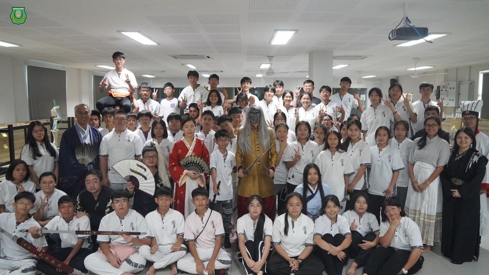
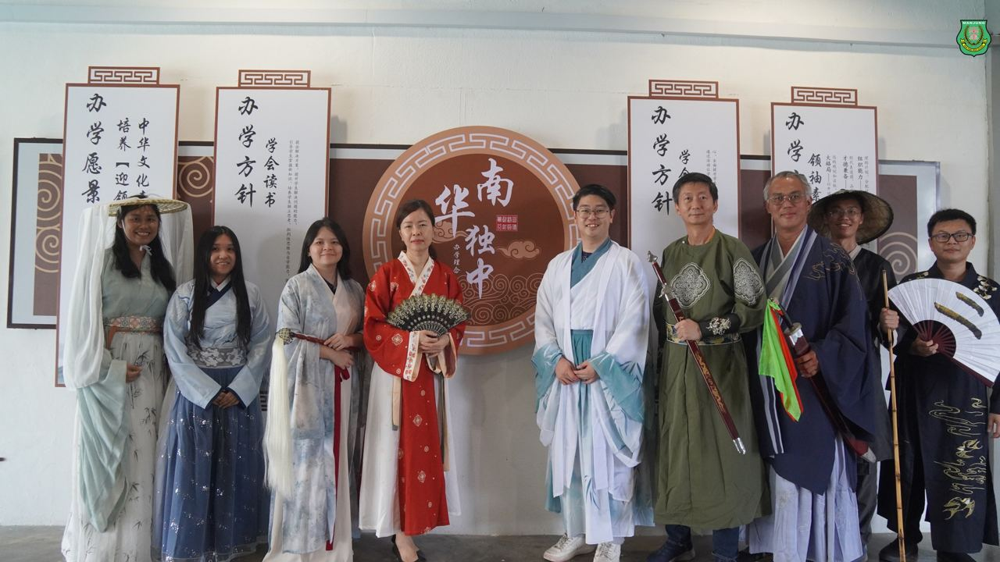
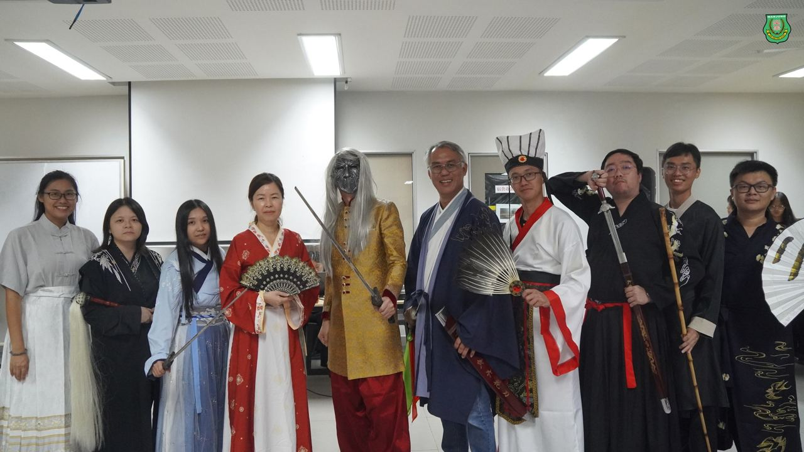
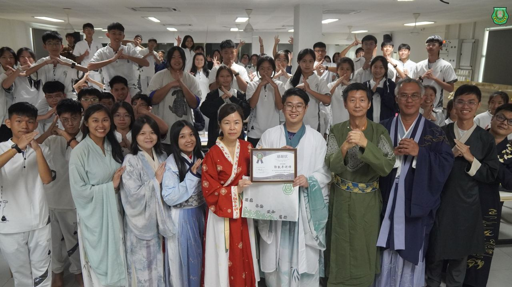
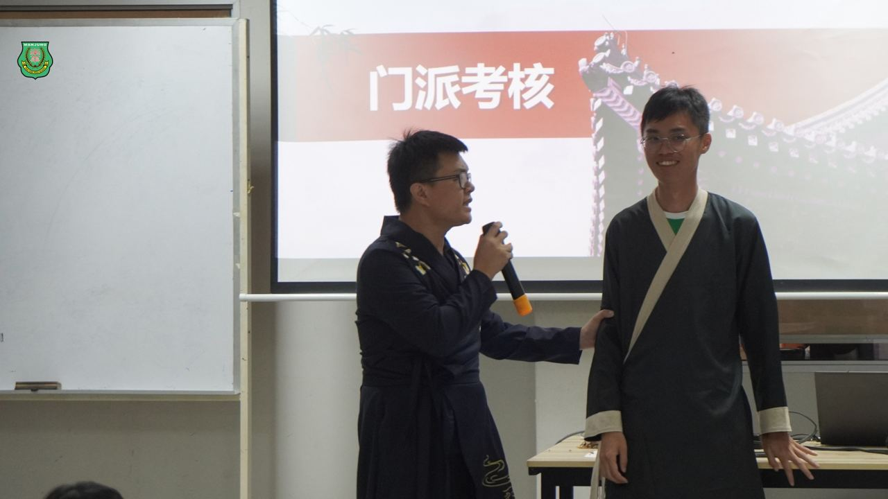
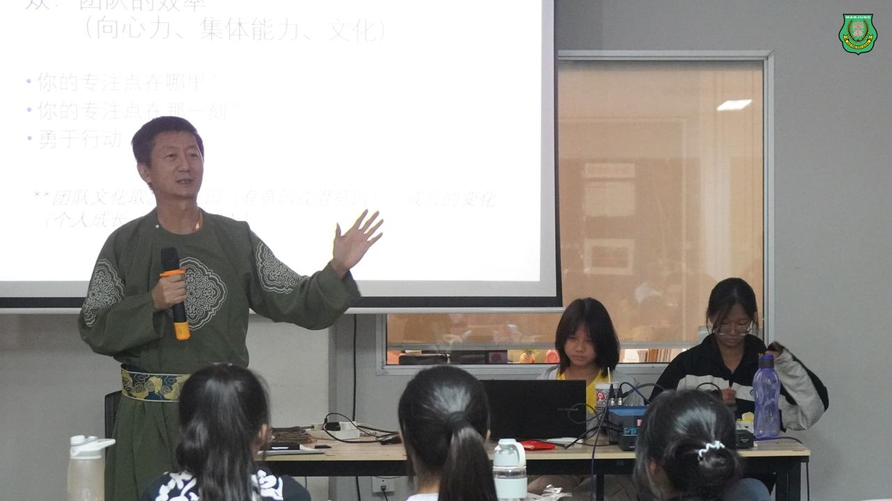
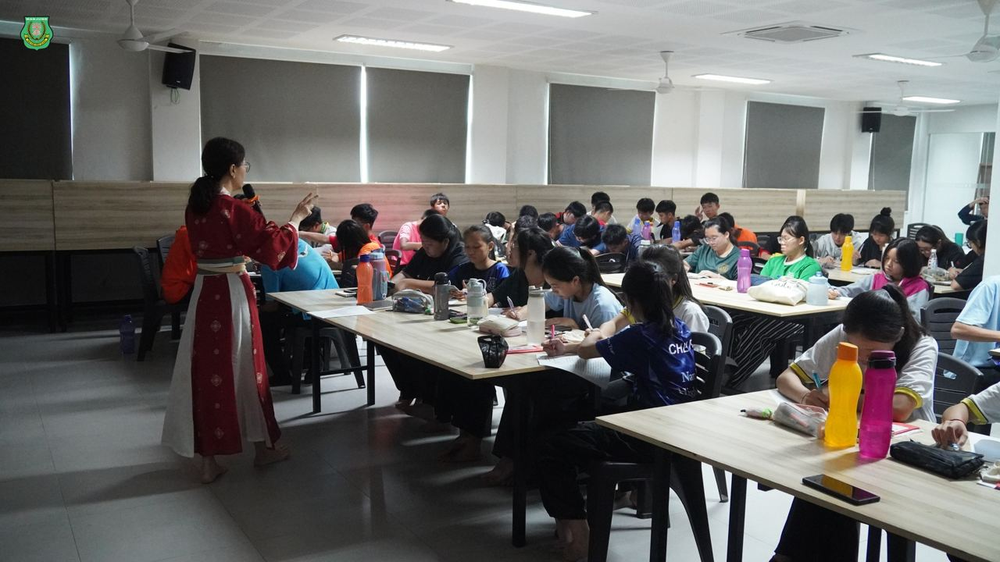
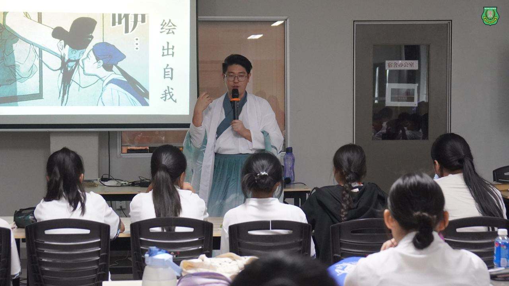

首创武侠修仙主题学生领袖训练营
首创武侠修仙主题学生领袖训练营
南华独中培养才德兼备未来学生领袖
本校打破传统训练营模式，首创以“武侠修仙”为主题举办第二届学生领袖训练营。董事及老师们扣紧“培养‘迎’领21世纪中华文化素养领袖人才”学校愿景，筹办了结合中华文化素养及学生领袖特色的训练营，旨在培养具备才德兼备、大格局与组织能力的学生领袖。
共有63名由各学会团体举荐的执委干部参与此训练营，透过代入修仙门派弟子的角色，历经闯关试炼、认识与突破自我、团体活动、寻宝解谜等多样的活动中，潜移默化地培养领袖素养，让领袖素养的种子无形中深植内心，真正做到了寓教于乐的集训环境。三天两夜中除了有沉浸式的训练活动，学生更是完成了搭建帐篷与露营住宿，充分体现了高度的自主与自律。
南华独中董事长颜登逸先生，同时也是此次学生领袖训练营主题与节目顾问，他强调了领袖素养中至关重要的特质“才德兼备”，同时透过活动中让学生体悟“大我与小我”的概念，并透过各种难关锻炼学生心智，让学生能意识到领袖需要具备积极主动的态度、发挥团队精神、灵活应变与及时纠正错误，引导学生突破个人局限，再以高效的沟通能力协调团队工作。最后借由“大格局”的观念，鼓励学生在成为未来领袖的道路上以宏观视野看清事物的整体，培养长远眼光。
南华独中校长陈丽冰博士暨学生领袖训练营主席指出，学生们在三天两夜的训练营中展现出了出色的学生领袖潜能，不仅在每道试炼中坚持不懈，克服了各种困难和挑战，更在其中展现出了高度的创意和组织能力。无论是面对挑战还是解决问题，学生们都展现出了出色的团队合作精神和领导力。这次训练营不仅是学生领袖培养的重要一环，也是学校教育理念的生动体现，让学生们得以在实践中学习领导力、团队合作和问题解决的能力，为他们未来的发展打下了坚实的基础。
厦门大学马来西亚分校课外活动部门主管的郭凯丰讲师受邀担任“统筹之能”的讲座分享人，透过循序渐进的座谈与活动从“认识自我”“发展团队”与“建立非凡团队”的三部曲，为学生带来耳目一新的学习体验。郭讲师表示，每个人经由挖掘自我的特质后，都能在团队中发挥各自的潜能与贡献，从而为非凡团队打造坚实雏形。
出席此次活动包括有南华独中董事长颜登逸先生、董事总务何添胜先生、董事副总务林道祥先生、校长陈丽冰博士及南华独中全体行政正副主任及老师们。
#修仙 #学生领袖 #训练营 #才德兼备 #大格局 #组织能力
#南华独中 #曼绒 #实兆远







